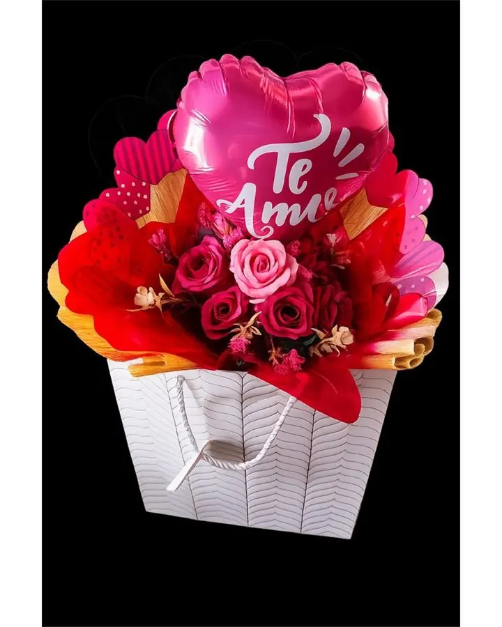

Palavras que acompanham o carinho
Mensagens para Cartão de Presente
Às vezes, uma frase simples diz exatamente o que importa. Encontre inspiração para seu cartão e leve a mensagem junto ao pedido de sugestões.
Canaã dos Carajás · PA
Presentes por encomenda e retirada agendada. Consulte disponibilidade para entrega.

Escolha uma mensagem que pareça sua
São sugestões originais e curtas. Você pode usar como estão ou escrever sua própria versão no formulário. Acrescente o nome de quem recebe e assine do seu jeito.
Como deixar o cartão mais pessoal
Troque uma frase genérica por um detalhe verdadeiro: uma conversa, um cuidado ou um desejo para o próximo ano. Em pedidos de desculpas, reconheça sua atitude sem cobrar uma resposta. Confirme com a Zadoni o formato do cartão e o espaço para o texto.
Para combinar a frase com o gesto, veja o Guia para Escolher o Presente Certo, explore presentes românticos ou consulte as cestas de aniversário. Para a época de fim de ano, veja ideias de presentes de Natal.
Encontre o Presente Certo 💝
Já escolheu a frase? Complete os detalhes em um só formulário. As respostas ficam nesta página até você decidir enviá-las.
A Zadoni vai sugerir opções pelo WhatsApp depois de receber seu resumo. Você também pode pedir orientação agora sem responder às perguntas.
Resumo para a Zadoni
Enviar resumo pelo WhatsAppO envio é uma consulta. Composição, valor, data e disponibilidade serão confirmados no atendimento.
Dúvidas frequentes
Posso mudar as frases sugeridas?
Sim. Use uma sugestão ou escolha “Escrever minha mensagem” no formulário para criar seu texto. Uma lembrança pessoal ajuda a deixar o cartão com a sua voz.
O texto escolhido já vai impresso no cartão?
Não automaticamente. A mensagem segue no resumo do WhatsApp para você confirmar com a Zadoni o texto, o formato e a possibilidade de incluir o cartão.
Preciso escolher o presente antes da mensagem?
Não. Você pode começar pelo cartão e pedir ajuda para escolher um presente de acordo com a pessoa, a ocasião e sua faixa de investimento.